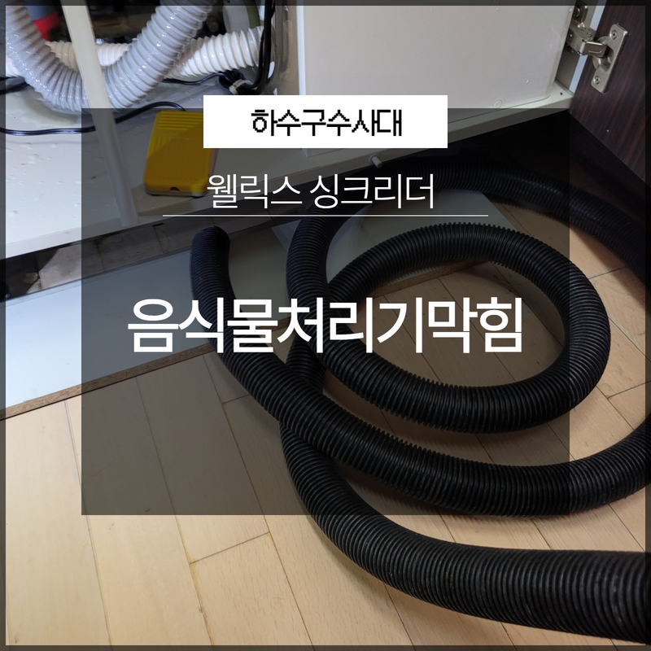
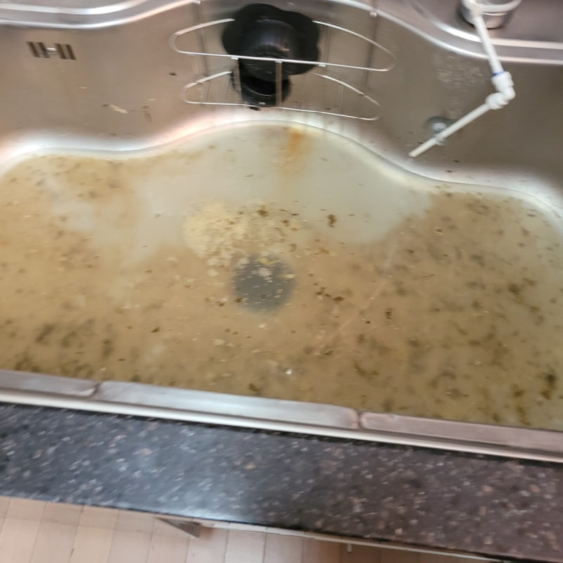
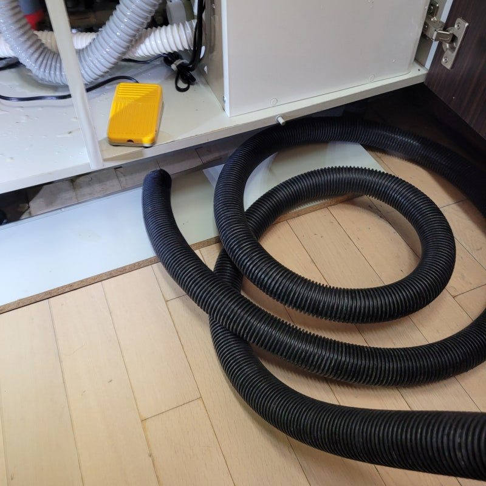
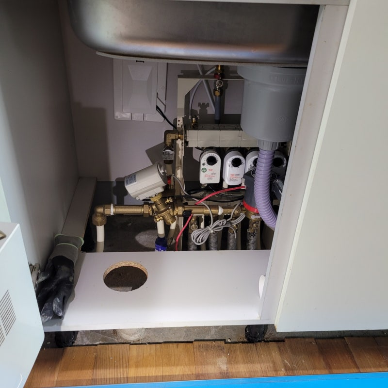
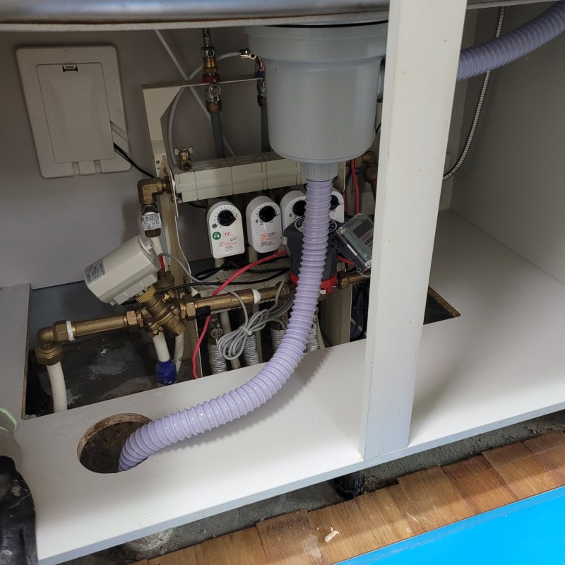
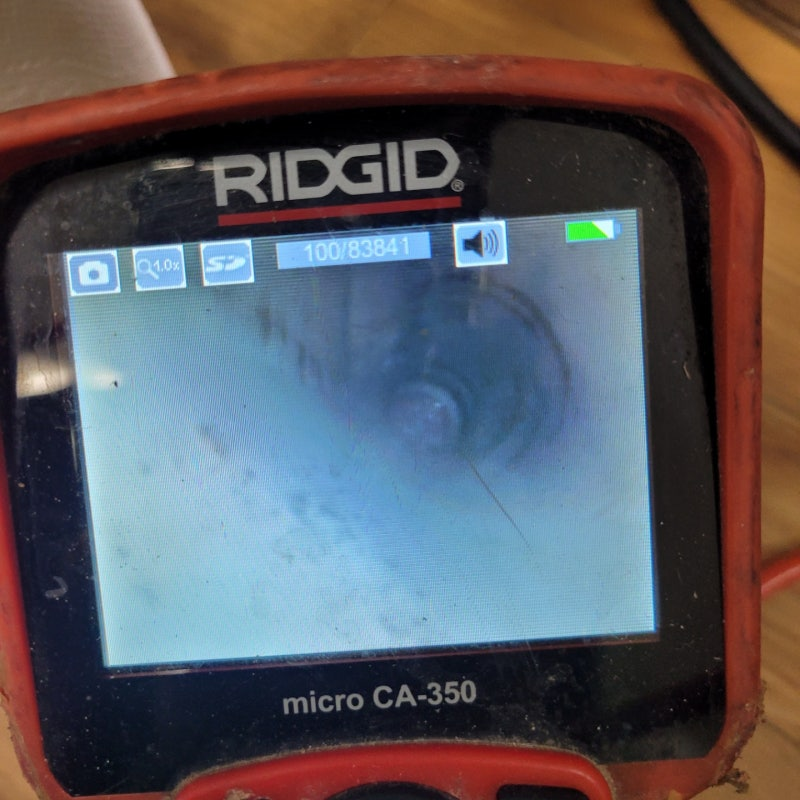
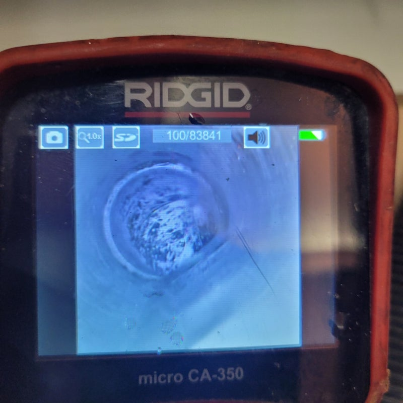

🏠 웰릭스 싱크리더 음식물처리기막힘 해결 전문 업체로
수원 권선구 웰릭스 싱크리더 음식물처리기막힘 전문 시공 후기

📋 작업 개요
- 위치: 수원시 권선구, 수원 권선, 용인 수지
- 서비스 유형: 웰릭스 싱크리더, 음식물처리기막힘, 하수구막힘 해결, 싱크대막힘, 배관 청소
- 작업 일시: 2023. 3. 9. 21:52
- 업체명: 하수구수사대 (010-5615-2118)
🔍 문제 상황
안녕하세요 하수구수사대입니다.
평소에 잘 사용하던 하수구가 갑자기 막힘이 발생하게 되면 생활에서 여러 가지로 불편함이 커질 수밖에 없는데요. 그래서 항상 이러한 일이 발생하지 않도록 하기 위해서는 평소에 신경을 써서 관리를 해주시는 것이 필요하다고 할 수 있습니다.
하지만 배관의 내부는 우리 눈으로는 확인을 하기 어려운 곳이기 때문에 배관 막힘이 발생을 하게 되면 혼자서 해결을 하려고 하지 말고 바로 전문가에게 의뢰를 해서 조치를 받아보는 것이 좋습니다. 이번에 방문한 현장은 웰릭스 싱크리더 음식물처리기막힘 해결 현장의 경우는 싱크대에 설치되어 있는 음식물 처리기에서 막힘이 발생을 하게 되어서 연락을 주신 곳이었는데요.
저희 하수구수사대에서는 현장으로 출발을 하기 전에 먼저 고객과의 상담을 통해서 먼저 상황 파악을 하고 그에 맞는 장비를 가지고 방문을 하고 있습니다. 막힘과 역류가 동시에 발생을 하고 있었기 때문에 고객님의 많은 불편함이 예상이 되었는데요. 빠른 해결을 하기 위해서 현장의 방문 후기를 함께 공유해 보도록 하겠습니다.

🔎 원인 분석
💡 전문가 진단: 이번에 방문한 웰릭스 싱크리더 음식물처리기막힘 해결 현장은
이번에 방문한 웰릭스 싱크리더 음식물처리기막힘 해결 현장은
다세대 주택으로 되어 있는 현장이었는데요. 요즘은 이렇게 가정에서 음식물 처리기를 통해서 배출을 하는 경우가 많이 있습니다. 그러다 보니 음식물들이 잘 분쇄가 되지 않거나 바로 들어가게 되는 경우에는 이러한 막힘이 발생을 할 수 있는데요.
싱크대가 막히는 대부분의 이유는 바로 음식물 찌꺼기의 유입이라고 할 수 있습니다. 요즘에는 시중에 셀프로 막힘을 해결을 하기 위한 약품이나 도구들이 많이 나와있지만 이러한 방법은 나중에 오히려 배수구에 더욱 좋지 않은 영향을 주어서 나중에 작업을 하는데 더욱 어려워질 수 있습니다.
배관 막힘이 발생을 하게 된다면

🔧 작업 과정
전문가에게 의뢰를 해서 빠르고 정확하게 해결을 하시는 것이 필요합니다. 전문 업체에서는 배수구가 막혔을 때는 우선적으로 내부의 원인이 무엇인지를 파악하는 것인데요 그렇기 때문에 더욱 정확한 해결이 가능하다고 할 수 있습니다.
실제로 현장에 방문을 해보면 고객님께서 셀프로 해결을 하려다가 오히려 막힘이 심해지게 되면서 해결이 더 어려워진 상황이 있기도 했습니다. 그러므로 섣부른 판단으로 배수구에 좋지 않은 영향을 주는 것보다는 전문가를 통해서 정확하게 해결을 하고 점검을 하는 것이 좋습니다.
현장의 하수구 막힘의 원인을 알아보기 위해서
내부는 역시 예상한 대로 여러 가지의 이물질들이 단단하게 뭉쳐서 배관을 막고 있는 모습이 보였습니다.
처음에 조금씩 쌓여왔던 이물질들이 뭉쳐지게 되면서 점점 굳어지게 되면서 이러한 덩어리가 형성이 되는데요. 그래서 결국에는 이렇게 하수구 막힘이 발생을 하게 되는 것입니다. 평소에 이러한 현상을 예방하기 위해서는 평소에 하수구를 제대로 점검을 하는 것이 중요한데요. 웰릭스 싱크리더 음식물처리기막힘 해결을 하기 위해서 이물질들을 제거하는 작업을 하기 시작하였습니다.
내부에 있는 이물질들의 경우는 여러 가지의 전문 장비를 이용해서 이물질을 제거할 수 있는데요. 이물질 제거를 하게 되면 악취와 함께 모두 동시에 해결을 할 수 있는 장점이 있기 때문에 이러한 부분에 있어서는 전문가의 노하우로 적정한 상황의 막힘을 해결을 할 수 있게 되는 것입니다. 이물질들을 모두 제거를 하고 나니 다시 물의 흐름이 좋아지는 것을 확인하였는데요.


✅ 작업 완료
이렇게 원인을 제거하게 되니 근본적인 해결이 되기 때문에
또다시 막힘이 발생하는 것을 예방할 수 있습니다.




⚠️ 음식물처리기 올바른 사용법
- ✅ 기름기가 많은 음식(지방류, 육류 비계 등)은 하수구 고착의 주원인이 되므로 투입하지 말아주세요.
- ✅ 부피가 크거나 단단한 채소, 과일 껍질은 잘게 자르거나 일반 쓰레기로 분리해 주세요.
- ✅ 작동 시 충분한 양의 물을 동시에 흘려보내 잘게 갈린 찌꺼기가 배관 끝까지 흘러가게 하세요.
- ✅ 배수가 느려지는 느낌이 들면 화학 세정제에 의존하기보다 내시경 배관 점검을 권장합니다.
💡 핵심 정리
- 확실한 장비 작업(내시경 점검 및 샤프트 스케일링)으로 원인을 뿌리 뽑습니다.
- 작업 후 1년 이내에 동일한 부위 재발 시 100% 무상 A/S 서비스를 보장합니다.
- 서울 · 경기 · 인천 전 지역에 24시간 언제든 긴급 출동할 수 있도록 항시 대기 중입니다.
❓ 자주 묻는 질문 (FAQ)
🚨 수원 권선구 웰릭스 싱크리더 음식물처리기막힘 문제로 고민이신가요?
정확한 원인 진단과 확실한 시공으로 재발 없는 해결을 약속드립니다.
24시간 긴급 출동 | 서울 · 경기 · 인천 전지역 | 1년 내 재발 시 무상 A/S